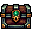
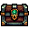
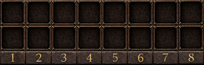
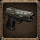
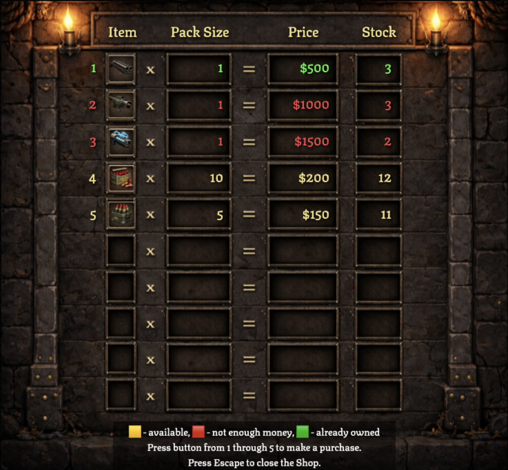

You can't remember your name, or how you got here, but you know you must survive. There are dangers lurking in every shadow of this freezing wasteland. There are others like you, lost and fighting for their lives. Stay alert and trust no one.

This is you, the lone survivor. Use arrow keys or A W S D to move.

You are equipped with basic blaster to start your journey. Use spacebar to shoot.
You will meet the enemies to oppose you.


Eliminate them to earn rewards and improve your skills. There's a slight chance they might drop rare items.

 

Your inventory contains the items you have collected on your journey. Press ~ or E to toggle the inventory panel. Press 1..8 to use items. Yellow border indicates current weapon.
  
 x7 x10
x7 x10
Your health is shown by the set of hearts. Keep an eye on it!
❤️ ❤️ ❤️ ❤️ ❤️ ❤️
The world is endlessly spreading under your feet. Each new chunk of it has an oasis of peace and comfort – a rifle store. Exchange your hard-earned rewards for better gear and supplies to aid your survival.
Once you're around, press Enter to visit the shop.

Press keys 1..9 and 0 to buy items from the shop. Yellow rows are items available for purchase. Red rows indicate items you cannot afford. Green ones are the weapons you already have, so you can't buy them again.
Once you die, you lose all your items and respawn in a random shop. The green arrow will guide you to the part of your lost inventory, but you must hurry before someone else finds it.
Good luck...